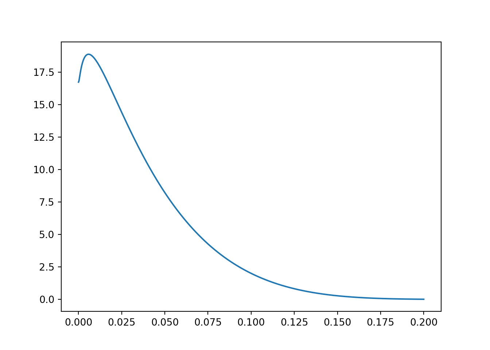

In a previous blog post I demonstrated how to use Bayesian hierarchical models to forecast the lift a team would generate over a number of experiments.
That was fun, but I realized I could make some analytical traction on the generated lift with some mild assumptions and use of jax for autodifferentiation.
In the last post, we assumed
\[ \log(\psi) \sim \mathcal(N)(\mu, \sigma^2) \>.\]
Of course, there is uncertainty in both \(\mu\) and \(\sigma\), but assuming we summarized the posterior predictive distribution for \(\log(\psi)\) using maximum likelihood, we could actually get the distribution of the random variable \(\log(\psi) \p_{\psi}\), or at least we could write a python function which represents the density.
Running the model on the data I included in that last post yields a maximum likelihood estimate of \(\mu = 0.08\) and \(\sigma = 0.035\). Now, let’s use the change of variables technique to get the distribution of \(\log(\psi)p_\psi\). This is going to require taking derivatives of some messy expressions. It is possible, but requires a patient hand or a computer algebra system, neither of which are essential to this prologue.Instead, I’ll use jax to do some of the differentiation. I’ll explain the steps below, and then demonstrate how this can be done in python with jax.
The Math
The Code
